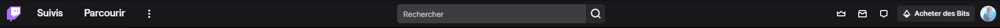

HTML, CSS, JS
Explorer

Explorer
L'HTML, de son nom complet HyperText Markup Language (en français, langage de balisage hypertext), est un langage de balisage créé vers les années 1989 qui ne cesse d'évoluer. En effet depuis sa création l'HTML a connu différentes versions : en 1989, HTML1.0 fait son apparition, puis HTML2.0 en 1995, en 1997 c'est au tour d'HTML3 et HTML4, et enfin HTML5 en 2014. Aujourd'hui il est utilisé par plus de 92% des sites webs et applications mobiles, ce qui fait de lui le langage le plus utilisé par les développeurs web.
Il fonctionne, comme son nom l'indique, avec des balises, c'est à dire des éléments qui dictent au navigateur ce qu'il doit afficher. Ces balises sont caractérisées par des chevrons (<,>), par exemple la balise <video> qui permet de lire une vidéo. Elles ont aussi ce que l'on appelle des attributs, c'est à dire ce qui définit les propriétés de la balise. Par exemple notre balise <video> peut avoir comme attributs autoplay, qui permet de lire la vidéo automatiquement, loop, qui permet de lire la vidéo en boucle, et encore pleins d'autres.
Certaines balises sont dites vides. En effet, la plupart des balises HTML commencent avec une balise ouvrante : <...>, puis une balise fermante : </...>. Mais certaines n'ont pas besoin de balise fermante : les balises vides. C'est le cas de la balise <img>, en HTML elle s'écrit <img src="#" alt="Image">. L'attribut src est simplement le diminutif de source, il définit donc la source de l'image (le lien de l'image si elle vient d'Internet, ou l'emplacement du fichier si elle est téléchargée sur le PC). Et l'attribut alt définit le texte alternatif, le texte définit par le développeur qui est affiché lorsque l'image ne peut pas se charger. On y met généralement la description de l'image.
Voici comment l'image va s'afficher si elle ne peut pas se charger :
En HTML, la sémantique est très importante pour le développeur mais aussi pour toutes les personnes qui souhaitent regarder ou travailler sur le code du site. Pour lui donner du sens, on le structure en 2 grandes parties :
- La tête représentée en HTML par la balise <head>, qui contiendra tous les "paramètres" du site. Par exemple c'est ici qu'on relie les feuilles de style qui contiennent tout le style que le développeur a affecté au site, on y met également les balises <meta>. Elles définissent comment le navigateur doit se comporter avec certaines fonctionalités. Par exemple la balise <meta charset="UTF-8"> bien qu'elle ait l'air compliquée, indique simplement au navigateur qu'il doit utiliser les caractères spéciaux. Sans cette balise le navigateur afficherait les "é" comme ceci : "é"
- Et le corps, représenté par la balise <body>, c'est ici que l'on met tout ce qui sera affiché sur le site, par exemple tout ce que vous venez de voir fait partie du corps. Á l'intérieur de celui-ci on retrouve 3 sous-parties :
• L'entête, à ne pas confondre avec la tête, elle est représentée par la balise <header>. La plupart du temps les développeurs y mettent la "navbar", c'est tout simplement l'anglais de "barre de navigation", on y retrouve généralement une barre de recherche, un lien pour contacter les développeurs, un lien pour accéder à son profil, etc.
Par exemple, voici la barre de navigation de Twitch :

• Le contenu principal, il est généralement représenté soit par la balise <main>, soit par une division (<div>) avec la classe "main". Il contient, comme son nom l'indique, le contenu principal du site (images, vidéos, textes, etc).
• Le pied de page, avec la balise <footer>, c'est généralement ici que l'on met les liens renvoyants vers les informations les moins intéressantes, par exemple les conditions d'utilisation, les informations générales, etc.
Par exemple, voici le pied de page du site de la Fnac :

Il est donc important de structurer son code en parties et sous-parties, mais aussi grâce à des balises de sémantiques telles que <section>, <header>, <footer>, <article>, <nav>, <main>, et encore d'autres.
Toutes ces règles nous permettent de passer de ceci :

à ceci :

Internet étant un réseau en étoile, il fonctionne beaucoup avec des liens, c'est à dire un "bouton" qui nous redirige vers une autre page. L'HTML étant le langage principal d'Internet il est important pour un développeur de savoir créer des liens. Pour cela on utilise ce que l'on appelle un lien hypertext caractérisé par la balise <a> suivie de l'attribut "href",qui est tout simplement le lien auquel le bouton va nous rediriger. Par exemple si vous cliquez ici, vous serez amenés sur la page de documentation HTML. Les liens permettent de donner du dynamisme au site et de rendre la navigation plus facile pour l'utilisateur.
Le CSS, de son nom complet Cascading Style Sheets (en français, feuilles de style en cascade) est un langage de programmation créé en 1994 (beta). En 1996 CSS 1 est développé et marque le réel début du CSS. Ensuite, en 1997, c'est CSS 2 qui est créé, puis CSS 2.1 en 2001 qui corrige CSS 2 sur de nombreux détails. Puis CSS 3 en 1999, et enfin CSS 4 a été développé très récemment, en 2019. CSS est développé par niveaux imbriqués et non par versions successives comme HTML, c'est à dire que CSS 3 inclut CSS 2 qui inclut CSS 1.
Il fonctionne le plus souvent avec un langage de balisage : HTML, XML, etc. CSS est tout aussi simple qu'HTML puisqu'il suffit de séléctionner l'élément auquel on veut apporter un style et de lui donner les valeurs que l'on veut. Par exemple pour changer la couleur d'un lien en blanc, on va séléctionner ce dernier (<a>), puis on va lui donner la valeur color: #fff; #fff étant le code hexadécimal du blanc.
Pour utiliser CSS on utilise cette syntaxe :

Sans CSS, Internet serait horriblement ennuyant. En effet HTML est un langage qui n'est pas fait pour être beau mais simplement pratique. CSS permet de le rendre beau et agréable. Par exemple ce site :

En voici une partie sans CSS :

JavaScript, ou JS, est un langage de programmation créé en 1995 qui a connu beaucoup de changement. Tout d'abord vous devez savoir que JS repose sur un standard : "ES" (ECMAScript), donc les différentes versions de JS sont les mêmes que celle de l'ES.
JavaScript permet d'implémenter des mécanismes complexes sur un site web. En effet, à chaque fois qu'une page web fait plus que simplement afficher du contenu statique, c'est à dire afficher du contenu mis à jour à la demande, des cartes interactives, des animations 2D/3D, des menus vidéo défilants, ou autre, JS a de fortes chances d'être impliqué. Par exemple le mode jour/nuit de ce site est fait grâce à JS.
En JS, comme en Python, on utilise les variables. Celle-ci nous permettent d'affecter une valeur à un mot et de la réutiliser plus tard dans notre code. Pour déclarer une variable en JS il y a 3 façon de faire :
• Le const (pour constante).
• Le var (pour variable).
• Le let (laisser en français).
Il n'y a aucune différence entre let et var, en revanche, const ne peut pas être modifié. En effet, avec let et var on peut déclarer une variable avec une valeur à un moment, et plus tard lui réaffecter une autre valeur, chose que l'on ne peut pas faire avec const :

Ensuite, il existe plusieurs "types" :
• L'object est caractérisé par des accolades. Il peut contenir une variable qui elle même contient un text, un nombre, etc. Par exemple dans l'objet "image", pour séléctionner la variable "description", nous allons faire image.description :

• Les string sont littéralement juste des guillemets, oui c'est tout. La seule chose à savoir est qu'il ne faut y mettre que du texte. Par exemple "Bonjour".
• Le number est aussi simple que les string car c'est un simple nombre, sans guillements, parenthèses ou accolades. Par exemple on dirait number = 9.
• L'array, il signifie "tableau" en anglais, et est caractérisé par des crochets. C'est un tableau de valeurs qui peuvent aussi bien être des string, numbers, variables, etc. Il est important de savoir qu'en JS la première valeur d'un tableau n'est pas la première, mais la zérotième. Par exemple dans l'array Course, contenant les valeurs "1er", "2ème" et "3ème", pour séléctionner la valeur "2ème", on dirait course[1] :

• Le bigint, il est très peu utilisé car il s'agit enfaite d'un nombre et d'une lettre. Par exemple 1236792n.
• La fonction, son nom est assez explicite car elle execute simplement une fonction prédéfinie, c'est à dire qu'on crée la fonction et on l'appelle lorsqu'on en a besoin. Elle se note nom_de_la_fonction(). Par exemple, fondRouge() ferait en sorte que lorsqu'on l'appelle elle mette le fond en rouge :
• Le typeof, comme son nom l'indique, il sert à connaitre le type d'une variable. Par exemple, nous avons une variable "unknown", et nous voulons connaitre le type de cette varialbe. Nous allons simplement faire :

• Le boolean, il y a juste 2 possibilités avec ce dernier : true (vrai), ou false (faux). Ils sont souvent utilisés pour les boucle en Python, mais en JavaScript ils le sont plus pour les conditions et les comparaisons. Par exemple :

• Undefined, il est utilisé généralement pour les conditions ou pour afficher une erreur. Par exemple :

Une fois que vous maitrisez ces 3 langages voici ce que vous pouvez faire